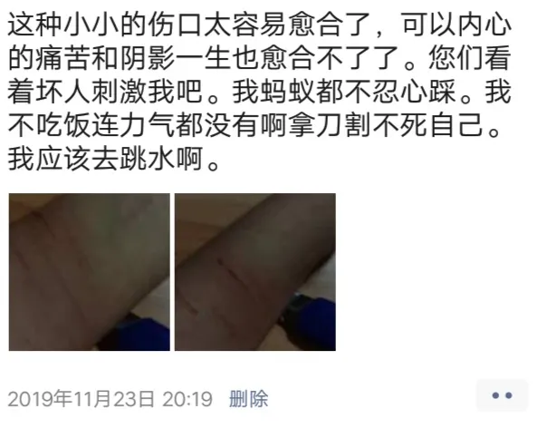

涉嫌性侵未成年女儿三年，揭开这位总裁父亲的“画皮”
1972年生的鲍某明，一米九左右，200斤上下，又高又壮像座山一样。
他是一个擅长与孩子打交道的人。
李星星的母亲回忆与鲍某明认识的过程。2015年4月份，两人通过网友介绍，相互认识了。鲍某明先是说，一直都想有个孩子，过不久，他又说希望和自己母女“组成家庭”。
见了面之后，她发现对方年过四十而未婚，有些动摇。
但大概只花了半年的时间，鲍某明就彻底取得了李星星母女的信任。他的关怀备至，以及律师、名校毕业生的身份，让李星星的母亲相信，鲍某明“可靠”，“确实就像个爸爸”，他的学问高，如果把女儿交给他教育，肯定比自己带在身边要强。
2015年11月，鲍某明带着刚满14岁的“女儿”李星星，到北京上学。
2016年，鲍某明出任烟台一家跨国石油服务集团的副总裁兼首席法务官，2018年又兼任国内另一家上市通讯设备公司的独立董事。而李星星，却从14岁开始了自己的噩梦，她近3年处于半失学状态，期间多次自杀未遂。
2019年4月9日，烟台市芝罘区一起“未成年人性侵案”，由李星星报案，掀开了这张父亲的“画皮”。
这是犯罪吗
血已经止住了，但李星星的下体一直疼痛。她安静了好些天，鲍某明终于把手机还给她。
2016年初，刚满14岁的李星星拿到手机，在百度上查询“下体疼痛的原因”，弹出一个医生诊疗的对话框，看头像是一位“医生奶奶”。李星星告诉医生发痛的起因。
“你被强暴了。”
这是李星星人生第一次直面这句话。
她想了一会儿，是什么意思，然后听从“医生奶奶”的指导，报警了。
先打110的电话，然后又听从指引，去了北京市某派出所，李星星向警察讲述了鲍某明对她的伤害。
第一次是在鲍某明的老家天津，2015年12月31日。跨年那天晚上，“爸爸”鲍某明把灯关了，却把电视声音开得很大，他指示女儿，不要做作业，过来坐下，看电视。
坐下。
黑暗中，鲍某明突然一把抱住了她。本能地推开，但当时只有70多斤的李星星，与近200斤的鲍某明，根本无法抗衡。她用尽力气，“爸爸”却像铁桶一样箍住她，摸她。“穿衣服睡觉不健康”，鲍某明一边说，一边强行脱掉李星星的衣服，然后侵犯她。巨痛，从下体一直冲到肚子里来，她流血了。
李星星一整夜没有睡。
第二天，肚子还是痛，去洗手间一看，又流血了，她懵了。
鲍某明没有给她时间清醒。他给李星星洗澡，收走她的手机，把她从天津又带回了北京，整天关在家里。
接下来的日子，他开始给李星星播放未成年人性题材影片，里面有很多爸爸、妈妈和孩子之间的色情场面。
*鲍某明说， “你看大家都是这么做的，国外也是这么做的。别人家都是这样，只是没有告诉你而已。” *
直到多天后意外的报警。
警察到家里搜东西，却几乎什么都没搜到。
鲍某明从家里“消失”了。
消失了多久，李星星不记得，她也不确定：鲍某明是不是被警察带走了？
懵懂的她只记得，鲍某明再次回到家时，自己非常恐惧，但是鲍某明对“报警”只字不提，好像从没过发生任何不愉快。反而，他又变回了刚认识时候的样子，和蔼开朗，认真地照料她，“真的就像个爸爸”。
随后的2015农历年假，鲍某明把李星星带去了外地旅游，没有让她回老家陪妈妈。
“他到底犯罪了吗？”李星星想不清楚。
他如果犯罪了，警察叔叔为什么不抓他？如果没犯罪，那我怎么还是觉得被伤害了？她不知道为什么鲍某明曾经那样对待她，如今又变得这么好。
李星星不敢追究。
悄悄地，鲍某明暂停了李星星的课业，不再送她去学校上课。原本说好的，鲍某明的父母会经常来照料这个“小孙女”，却也几乎从未来过。亲生妈妈经常的来电，她只能在鲍某明的注视下接听。鲍某明给李星星注册了一个微信账号，里面只加了一个好友，不是妈妈，而是“爸爸”。
慢慢地，李星星掉进了一个“只有鲍某明”的世界。
2016年4月左右，鲍某明获得了一份新工作，烟台一家跨国石油服务集团的副总裁兼首席法务官。
他带着李星星离开北京，搬家到了这座海滨小城，美丽的山东烟台。
逃
烟台的天空湛蓝湛蓝，时常干净得没有一丝云彩。但是李星星从来不往窗外看。她说：“没有意义。”
“父亲”鲍某明，已经完全变成了一个拥有“两幅面孔”的人。
但凡身边有一个大人时，鲍某明都是开朗、得体、有学识的，而独自面对李星星时，就瞬间换了一副样子。
最开始，鲍某明不让她出门，随时收走她的手机，逼她做不愿意做的事，不许她哭，也不许她问为什么。
刚满14岁的李星星，还没有发育，个子也瘦小。但是鲍某明会突然掀开她的衣服，嗲着声音，叫李星星“妈妈”，说自己是“宝宝”。很多次，鲍某明坐在李星星的肚子上，压得她怎么也起不来。她出血，晕厥。这些画面，是李星星日后半夜常至的噩梦。
她给记者看一些残存的照片，照片上，鲍某明脱了衣服正在粘胶带，准备给她使用的成人性用品，还有一些床单，有的沾血，有的被踹烂。
在李星星的口中，鲍某明到了烟台之后，日益的喜怒无常。
2017年，家里换了一个新马桶，鲍某明很高兴，叫李星星去试。李星星说现在没有，还不想上厕所。他就直接把李星星抱到了洗手间，扒下她的裤子，按坐在马桶上。
李星星没有隐私。上厕所，鲍某明不允许她关门。他随时会登陆李星星的微信、QQ。鲍某明还在客厅安装了一个摄像头，李星星在家做什么，他随时随地都能在手机里查看。
李星星给《南风窗》记者听一些语音。
在这些语音里，鲍某明大声呵斥李星星不应该在朋友圈诉说自己的痛苦，“微信发完朋友圈发，你就不能不说吗！”他告诉李星星，“沉默是金啊！”
鲍某明呵斥李星星的语音录音. 来自南风窗
“他不让我把这些事告诉别人，他都不让我说出来。就算我微信里只有他一个人，他也不要我说。”李星星告诉《南风窗》记者。
李星星的抵抗情绪，总是被一套完整的说辞包围、瓦解。
鲍某明一开始说，“我们做的事是很正常的，电影里大家都这么做。”后来说，“你不能把我们的秘密说出去，说出去你就不干净了，所有人都会讨厌你。”最后说，“这个世界上，只有我是对你最好的人。别人都是坏人，都想害你。”
他反复纠正李星星说话的方式，不准说难受、痛苦，要说“伤心”，不准说“被爸爸按在床上”，要说“你喜欢爸爸，爸爸也喜欢你”。
这一套具有体系功能的话语，消解李星星的意志，让她不敢离开。
类似的话，还有鲍某明要求的——不能有比“爸爸”更重要的事。
李星星回忆一些场景。
她坐在家里看动画片的时候，鲍某明问她，“你是不是喜欢喜羊羊，想和喜羊羊做‘那种事’”；她去动物园，看到可爱的动物很开心，鲍某明悄悄凑过来，说，“人和动物也能做”；李星星回老家和妈妈待一段时间，鲍某明也告诉她：“你妈妈和你也能做”。
李星星很喜欢一只洋娃娃，鲍某明在侵犯李星星时，把洋娃娃放在自己的私处。李星星有一阵子很认真学习，鲍某明就对她发脾气，“弄个学习都比我重要！”
小女孩的一切爱好、热情，都逐渐臭了，死了。
李星星后来写下过一句话，“我逐渐感觉自己病了，我对一切都不再相信，甚至觉得我最在乎的身体的各种器官，我所珍爱的各种爱好和特长，都不在我身上，而在他身上。”
鲍某明好像就是对的。他说自己是世界上最厉害的人，所以在外的事业顺风顺水。2018年，他又出任了国内一家上市通讯设备公司的董事。
李星星告诉《南风窗》记者，她后来会“发病”，按照鲍某明的要求去说一些话，但清醒过来后，又感到痛苦。
在漫长的三年多时间里，“很正常”“说出去你就不干净”“我是对你最好的人”“别人都是坏人”，这一套话，鲍某明就像“背书”一样，只要说了上一句，李星星就知道下一句。
这些话是牢笼，是炭火。
她感到被炙烤。
2019年4月8日，李星星在烟台自杀，被他人救下，送警。
当时的她，仍旧未成年。
“给我现在的女儿，未来的妻子”
“高烧”、“经期”、“掐我脖子”、“射在里面了”，4月9日，李星星在烟台市芝罘区某派出所说出了自己的遭遇。
当天，在民警的陪同下，她在烟台山医院做了外伤鉴定和体液擦拭提取。
鲍某明作为“犯罪嫌疑人”，也被采取强制措施，到该派出所进行笔录。
李星星找到了一些物证，有带有血液、精液的卫生巾、鲍某明擦拭过的纸巾。她还告诉警察，家里的电视机和鲍某明的电脑上，都有很多“儿童色情片”，还有她被迫拍下的裸照和视频。家里装的摄像头，一定也拍到很多东西。
很快，烟台市芝罘区刑警大队几名刑警来到了派出所，和民警一起正式笔录。
李星星不再愿意喊鲍某明叫“爸爸”，而是代称为“坏蛋”。
但她仍旧保留着很多13岁时的习惯，总是很尊敬地称呼其他每一个人，“警察叔叔”“阿姨”“哥哥”。
李星星向《南风窗》记者回忆做笔录时的场景。
在正式笔录之前有一个小笔录，之后还有一个补充笔录。办案区的铁门关上了，她和几个警察叔叔在里面，中间有叔叔在抽烟，也有别的叔叔偶尔进来。
一位警察叔叔问她，“鲍某明打你了吗？”
李星星说打了，“他先是掐我的脖子……”
一只手突然过来，捏住了李星星的脖子，那是另一位“警察叔叔”。他手上用力，问李星星，“他是怎么掐你脖子的？”
……回忆到这里，李星星突然哭出声来，“我没有办法去形容那种感觉，太痛苦了。我一下子回到了坏蛋掐我的感受。”
4月9日后来的记忆是有一些混沌的。
李星星只记得快做完笔录的时候，芝罘区检察院也来了一位刘检察官，是位“阿姨”。
2020年3月25日，芝罘区检察院一女性检察官在电话中，向李星星证实，对这一案件，当时实行了检察院提前介入。
再后来，她发烧难以支撑，警察叫她在派出所的沙发上躺一会儿，她却睡着了。
她醒来之后，鲍某明从另外的笔录房间里出来了。
鲍某明也坐到了那个沙发上。他向李星星挨过来，李星星向旁边让，他又靠过来，连续靠过来两三次，李星星还是让。她很惊恐，抬头望向对面的“警察叔叔”。
李星星记得，刑警队的副队长张高，当时正坐在对面，一切看在眼中，没有出口制止。
鲍某明开始细数自己对李星星的好，“我是对她最好的人”。
4月9号，就这样过去了。
鲍某明被放回家了。
后来的事，对于李星星来说，每况愈下。
几天后，警方告诉她，找不到电视里的“儿童色情片”，电脑里的文件也没找到。李星星说自己知道在哪里，去指给警察看。她和妈妈去了派出所，对方却告诉她，电脑已经不在派出所里了。
李星星向民警要DNA的检测结果，对方没有给她。
她要求再次报警，该派出所没有接受。
直到4月中下旬，办案警察打电话给李星星，叫她去领《撤案决定书》。
李星星拒绝。
但这份《撤案决定书》，5月份她再去派出所求助时，还是给到了她的手上。
6月份，警方再无回音，李星星不想活了。
她跑去派出所门口闹，民警叫她去找鲍某明。
李星星原本害怕，不敢去，但“想到自己可能马上就死了”，心一横，一个人跑去找鲍某明。她想叫鲍某明承认错误，“为什么伤害我那么多，连一句对不起也没有？”
在鲍某明的家里，他们厮打起来。
两人又被带到了芝罘区该派出所。
这件事的结果是，在警方的促使之下，鲍某明给李星星写了一封保证书。保证书中写道：“给我现在的女儿，和未来的妻子。”
再次立案
从派出所出来后不久，李星星跳进了黄海。
她又被人捞了起来。
从6月起，她开始住院。她的妈妈把她带回了老家东南某省会，接受治疗。
医院检查结果显示，李星星患有重度抑郁症、重度创伤后应激（PTSD）、重度焦虑症，而且阴道损伤发炎。

李星星的妈妈周娟，从4月8号接到警方的第一个来电“惊雷”后，立刻从外地赶到烟台。她告诉《南风窗》记者，当时自己不想活了，“想拿把刀劈了鲍某明算了”。
但等她见到女儿时，只想先让女儿活下来。
4月份报警失败之后，李星星频繁地试图自杀，每一次都折磨着周娟。她生性内向，不善交际。女儿闹自杀的时候，她经常吓得一句话都不敢多说，女儿去哪里她就去哪里，跟在身后，跟着就自己在后面哭。
周娟的普通话带有很重的南方口音，几乎阻碍正常沟通。她带着女儿去南山路派出所、芝罘区刑警大队、检察院，找信访部门、找律师、找人大代表，到处找人帮忙请求再次立案。
她们还找到了鲍某明的父母、亲人和公司老板，有人报以谩骂，有人回馈以善意，但终究石沉大海。
异乡母女，再立案之路十分艰辛。
周娟回忆说，“人都在，就是告诉我不上班”“我打了好多电话，都不接”。她们母女俩不断地跑、等、求，四处碰壁。
后来，一位曾经对她们表达过善意的民警直言说，“我不能再管你这件事了，再管我就没工作了。”
直到6月份李星星那一次跳海，周娟才意识到，女儿已经病了，必须接受治疗。
在烟台治病，人生地不熟，又处处害怕，她只能带女儿回老家。她辞掉月薪本不高的工作，专门料理女儿。
此后母女俩人反复在老家、烟台之间往返，李星星的反复崩溃，催着她们拼命维权。一开始，她们坐高铁去烟台，后来觉得高铁太贵了，就改坐大巴，“半年下来，十几趟”。
“撤案没有道理”，她们希望再次立案。
终于在8月份的时候，她们找到了山东泰泉律师事务所的一位李律师。
李律师回忆初次见到李星星母女的场景，在济南河西广场的一家咖啡馆里，“小姑娘还只有17岁，但是脸上土黄色的，很憔悴。类似于面黄肌瘦的那一种。妈妈话也不多，看起来情绪很低落。”
李律师听了李星星的讲述之后，跟烟台市芝罘区办案的派出所进行了联系沟通，“确认基本属实的情况下，我们才决定去代理这个案件。”
9月6日，李律师和同事一起去到烟台，先后辗转多个部门，向检察院信访部门提交了部分证据，和一份《立案申请书》。
终于，10月9日，在检察院的监督之下，李星星的案子第二次立案。
“我局认为有犯罪事实发生，需要追究刑事责任，现决定立案侦查。” 这份盖有烟台市公安局芝罘分局印章的《立案告知书》上如此写道。
随后，李星星在派出所连续做了两个周的笔录，事无巨细。期间，她多次崩溃，在派出所里甩自己巴掌，但坚持配合，做完了笔录。

她之前认识的一些有类似经历的病友，在她每夜做完笔录，回到家里时，为她提供心理支持和法律援助。
这些病友，有时候比医生和警察还活跃一些。她们陪伴李星星至今，也记录着这个小女孩近一年来的遭遇，和心路历程。
罗希是北京科技大学的学生，她在中学时被老师性侵。她的老师对她说，“我伤害你，你反抗了，大家都知道这是性侵，但我用我的方式让你不能反抗，那我们做的一切就是理所当然的。”她知道李星星和自己不一样，李星星手里保留了很多证据，她鼓励李星星说出来。
还有北京师范大学的清子，她告诉李星星自己从小被邻居性侵的事，她是陪伴李星星最久的“同类”，帮助李星星很多。
她告诉李星星，“姐姐们不需要你回报什么，这是姐姐们欠你的，因为我们不够勇敢。”
在两周笔录中，李星星向警方提交了手头上所有的证据：另一袋带有血迹、精液的卫生纸、卫生巾，还有录音、照片、聊天记录。
这里面有几张鲍某明的手机QQ浏览记录的照片。其中一张拍摄于2018年的照片上显示，在当年2月18日，鲍某明连续访问了近数名“送养”“送养小孩”“送养女宝宝”的用户空间。
李星星告诉记者，“不只有我，还有其他小孩儿，现在我受伤害，将来还会有别的小孩受伤害。”
警方为李星星开具了一页接收清单。
这一次，希望来了吗？
事实上，从二次立案到现在，已经6个月过去了，除了这个漫长的笔录，李星星没有收到任何新的回音。
从2020年新年之后，李星星本人、律师多次联系办案刑警臧警官，但他的电话始终无法拨通。
2020年4月1日，《南风窗》记者打通了鲍某明的电话。正在取保候审中的鲍某明，获知记者身份后，立刻将电话挂断，再也无法拨通。
《南风窗》记者会持续追踪此案。
（文中采访对象为化名）
作者 | 南风窗记者 陈舟
编辑 | 李少威
排版 | GINNY
图片 | 部分来源于网络
南风窗新媒体出品
原网址: 访问
转载请注明来源，欢迎对文章中的引用来源进行考证，欢迎指出任何有错误或不够清晰的表达。可以在下面评论区评论，也可以邮件至 memo_hanabi@outlook.com
文章标题:涉嫌性侵未成年女儿三年，揭开这位总裁父亲的“画皮”
文章字数:5.3k
本文作者:南风窗
发布时间:2020-04-09, 22:27:59
最后更新:2020-04-15, 20:08:03
原始链接:https://mmspace.now.sh/three-years-sexual-assault-on-a-minor-daughter-unveiling-the-presidents-fathers-painting-skin/版权声明: "署名-非商用-相同方式共享 4.0" 转载请保留原文链接及作者。